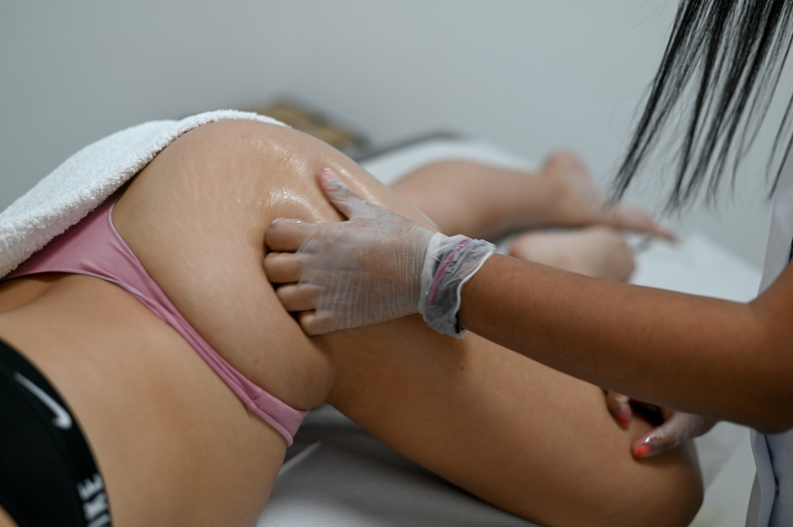
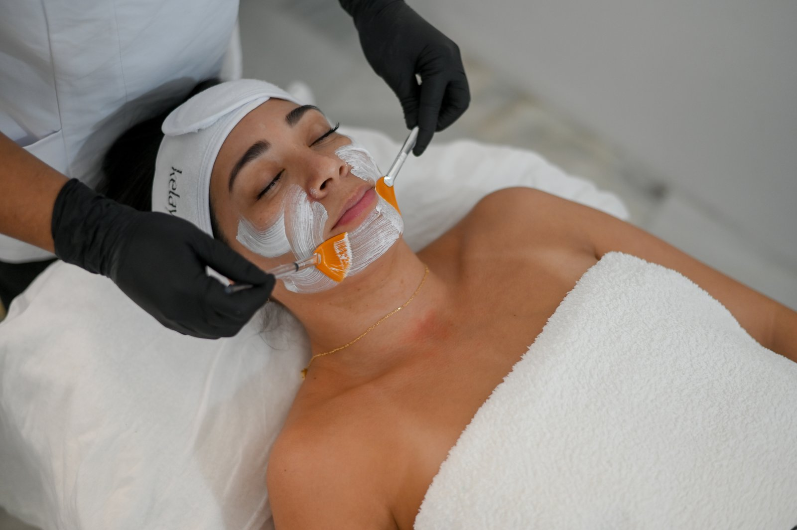
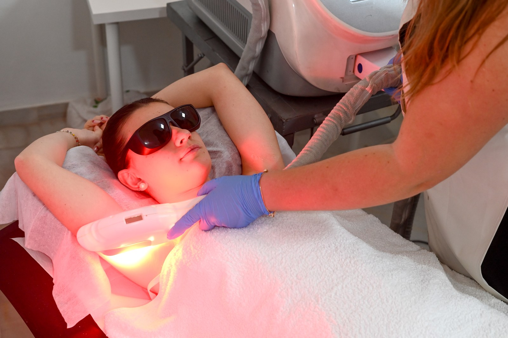

Lo que
hago bien.
Once tratamientos profesionales distribuidos en cuatro áreas. Cada uno adaptado a lo que necesitas, nunca en serie.
Estética corporal

Maderoterapia
Técnica manual con instrumentos de madera para trabajar la celulitis, modelar el contorno corporal y activar la circulación. Se combina frecuentemente con presoterapia para potenciar resultados.
Tratamiento estrella
Presoterapia
Drenaje del cuerpo mediante presión controlada con botas de compresión. Ideal para piernas pesadas, retención de líquidos y recuperación muscular. Muy solicitada en épocas de calor.
Tratamiento estrellaDrenaje linfático manual
Masaje suave y ritmado que activa el sistema linfático, reduce la inflamación y elimina toxinas de forma natural. Especialmente recomendado en postoperatorios y embarazo, siempre con autorización médica.
Estética facial

Lifting de pestañas
Curvado y tínte de pestañas naturales para conseguir volumen y apertura de mirada sin extensiones ni maquillaje diario. El resultado dura entre 6 y 8 semanas.
Tratamiento estrella
Laminación de cejas
Tratamiento que ordena, fija y nutre los pelitos de las cejas para un efecto pelo a pelo natural y definido. Dura entre 4 y 6 semanas y se puede combinar con tínte de cejas.

Limpieza facial profunda
Limpieza con extracción de impurezas, exfoliación y mascarilla personalizada según tu tipo de piel. Ideal como mantenimiento periódico o antes de tratamientos faciales más específicos.
Lifting coreano
Técnica de masaje manual facial que trabaja el tono muscular, redensifica y devuelve luminosidad. Sin agujas, sin procedimientos invasivos. Resultados visibles desde la primera sesión.
Hidratación labial
Exfoliación, nutrición e hidratación profunda de labios. Un pequeño tratamiento que se nota mucho: pieles más suaves, labios más definidos y un acabado que ilumina todo el rostro.
Manicura y pedicura

Manicura completa
Cuidado integral de uñas: limado, cuticulas, hidratación y esmaltado a elegir entre clásico o semipermanente. También trabajamos decoraciones y nail art para ocasiones especiales.
Tratamiento estrella
Pedicura completa
Cuidado profesional de los pies con tratamiento de durezas, hidratación y esmaltado. El tipo de sesión que hace que los pies descansen de verdad y salgas lista para cualquier calzado.
Aparatología avanzada

Cavitación y vacumterapia
Reducción localizada de grasa y celulitis combinando ultrasonidos con presión negativa. Trabajamos zonas concretas con resultados visibles desde las primeras sesiones.

Radiofrecuencia y ondas rusas
Reafirmación tissue con radiofrecuencia más tonificación muscular con corrientes rusas. Dos tecnologías que se complementan para resultados en piel y músculos a la vez.

Depilación láser
Depilación duradera con tecnología profesional. Consulta zonas disponibles y fototipos de piel. Las sesiones se programan según el ciclo de crecimiento del vello para optimizar el resultado.
Servicio externo — consulta disponibilidadNutrición — colaboradora externa
Si lo que buscas va más allá de la estética, colaboro con una nutricionista para quienes quieren acompañar el tratamiento corporal con hábitos alimenticios. Este servicio se gestiona directamente con la profesional. Pregunta por WhatsApp.
Preguntar por nutriciónElige tu tratamiento
y hablamos.
Si tienes dudas sobre qué tratamiento se adapta mejor a lo que buscas, cuéntame y te orientaré sin compromiso.
Pedir cita por WhatsApp